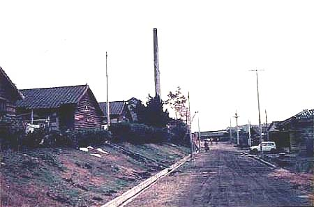

平成16年10月1日現在、
野添社宅共同浴場（平成9年7月撮影、提供写真） 炭鉱社宅の共同浴場は、会社従業員ならびにその家族は無料だったが、同じ社宅内に住みながらも、 厚生理容所の人たちは有料で、「昭和30年代、1人5円の入浴券をひと月分買っていた」という。その共同浴場も平成10年6月解体された。  野添北社宅。共同浴場の煙突が見える。（昭和51年11月藤田さん撮影）
炭鉱社宅の共同浴場は、会社従業員ならびにその家族は無料だったが、同じ社宅内に住みながらも、 厚生理容所の人たちは有料で、「昭和30年代、1人5円の入浴券をひと月分買っていた」という。その共同浴場も平成10年6月解体された。
野添北社宅。共同浴場の煙突が見える。（昭和51年11月藤田さん撮影）